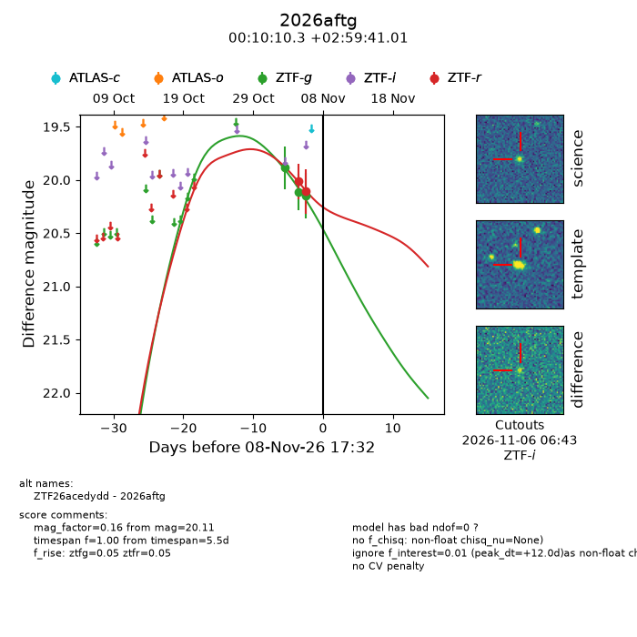
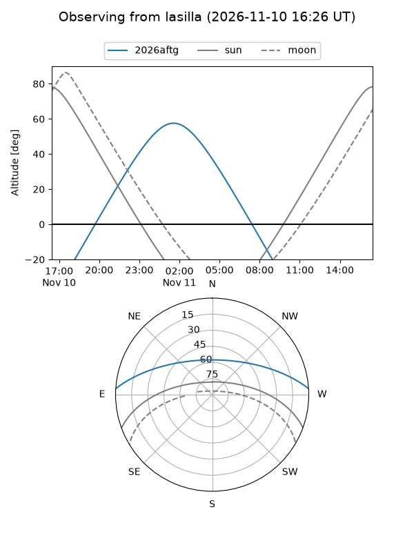
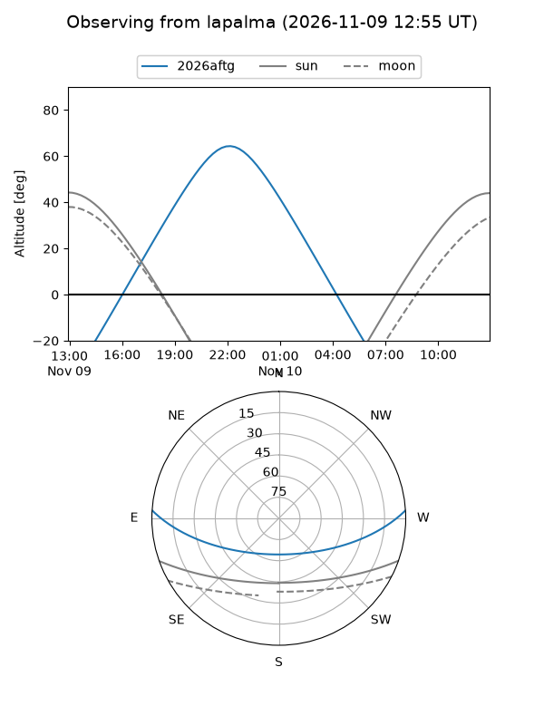
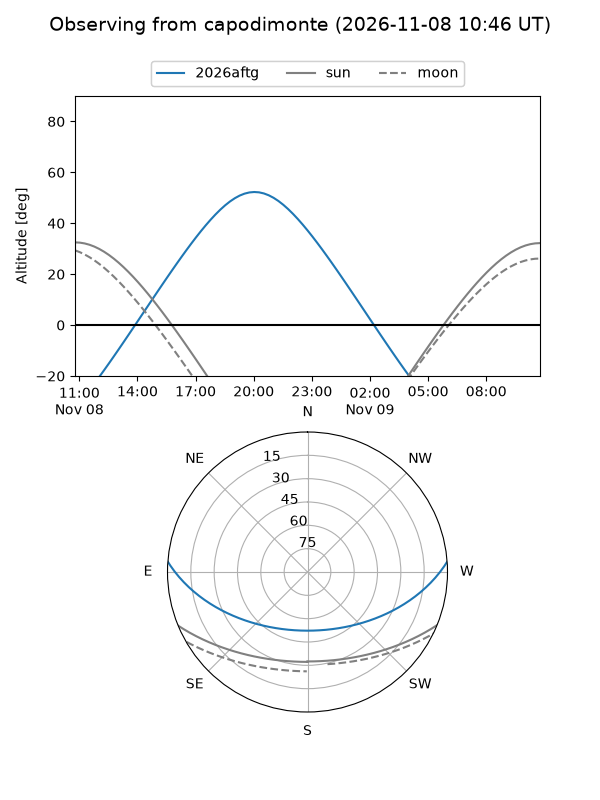
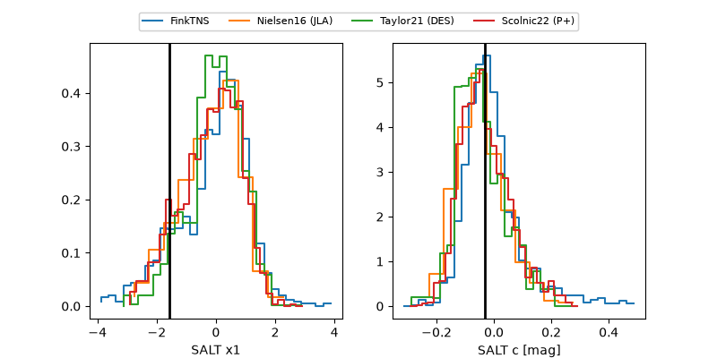

2026aftg
Target 2026aftg at 2026-11-08 17:35
Aliases and brokers:
FINK-ZTF: ztf.fink-portal.org/ZTF26acedydd
Lasair-ZTF: lasair-ztf.lsst.ac.uk/objects/ZTF26acedydd
ALeRCE-ZTF: alerce.online/object/ZTF26acedydd
YSE-PZ: ziggy.ucolick.org/yse/transient_detail/2026aftg
TNS name: wis-tns.org/object/2026aftg
Direct TNS query: direct search
alt names
ZTF26acedydd (ztf,fink_ztf)
2026aftg (tns,yse)
Coordinates:
equatorial (ra, dec) = 2.5429,+2.99472
equatorial (HMS+DMS) = 00:10:10.30,+02:59:41.01
galactic (l, b) = (103.0486,-58.27499)
Flags:
peak dt: +12.0
Photometry:
last ztfg=20.15, ztfr=20.11
3 ztfg, 2 ztfr detections
Lightcurve

Visibility



Additional plots
